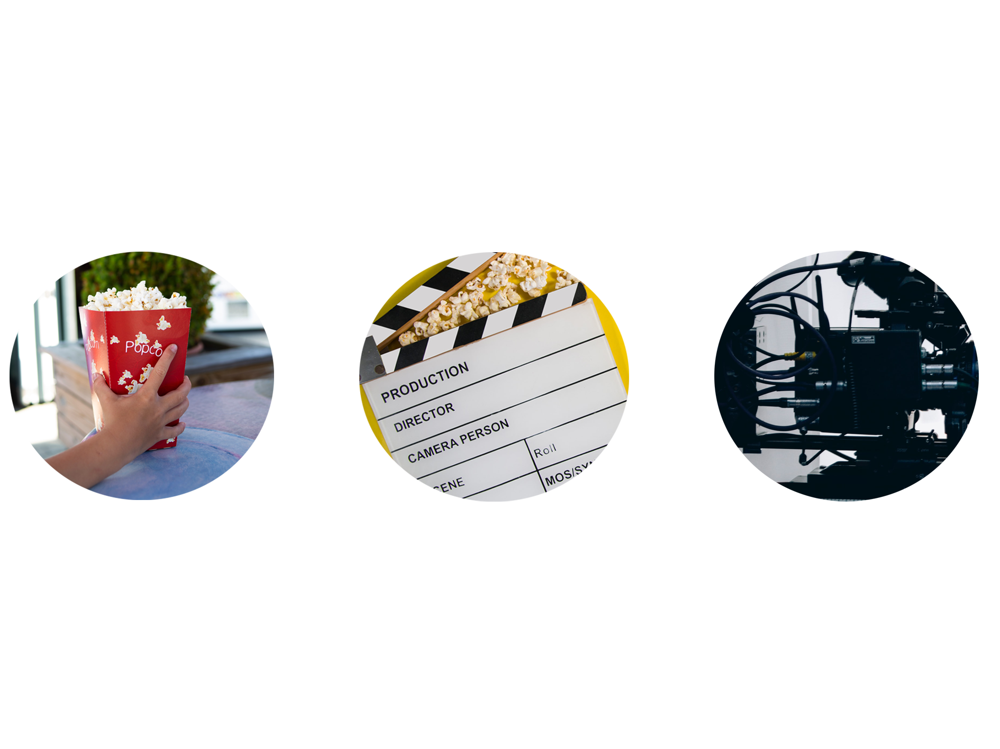
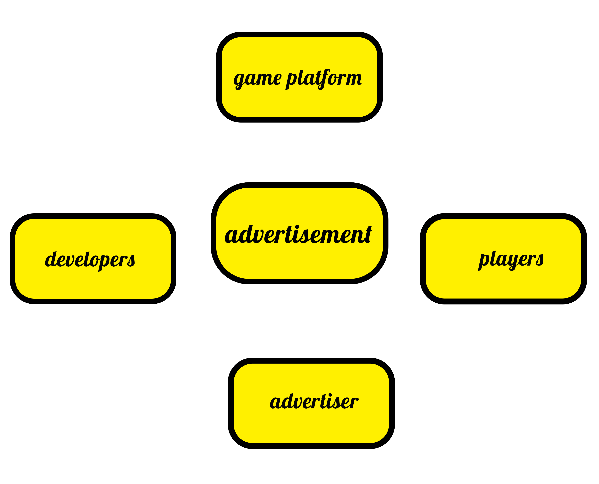

The next generation web game platform
win-win-win for developers, advertisers, players
Лучшие функции
P-Media
P-Media - это международная медиа-компания, специализирующаяся на производстве и распространении контента в различных форматах, включая телевидение, радио, интернет и печатные издания. Компания имеет широкий портфель медиа-активов, включая телеканалы, радиостанции, онлайн-платформы и издательства.
1. Игровые версии - это различные варианты игр, которые могут быть доступны для игры. Это может включать в себя различные уровни сложности, режимы игры, различные задания и миссии и т.д.
2. Собственная таблица лидеров - это функция, позволяющая игрокам соревноваться между собой и видеть свои результаты в сравнении с другими игроками. Обычно это включает в себя возможность просмотра лучших результатов по различным категориям, таким как время прохождения, количество очков и т.д.
3. Профиль пользователя, с показом оценок - это функция, позволяющая игрокам создать свой собственный профиль в игровой платформе, где они могут отслеживать свой прогресс, достижения и оценки. Это также может включать в себя возможность просмотра профилей других игроков и их достижений.
4. Рейтинг игр - это функция, позволяющая пользователям оценивать игры и оставлять отзывы. Это помогает другим игрокам принимать решение о покупке или загрузке игры, а также помогает разработчикам улучшать свои игры на основе обратной связи от игроков.
P-Media также является активным участником в сфере медиа-инвестиций, инвестируя в перспективные проекты и компании в области медиа и развлечений.
Компания имеет офисы и представительства в различных странах, что позволяет ей успешно работать на мировом рынке медиа-индустрии.

Дорожная карта
